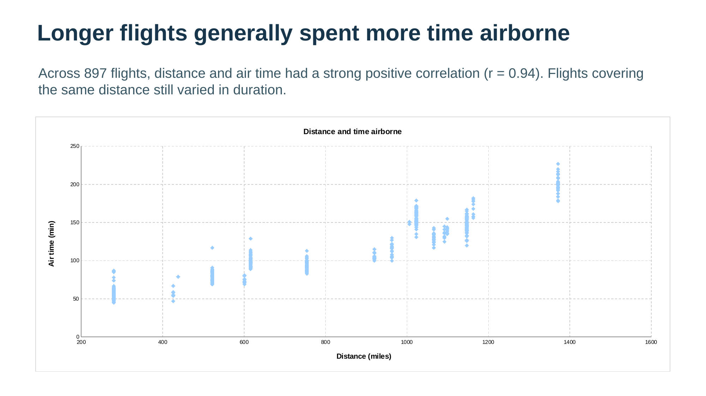

Team Members
- Derek Camacho
- Easton Contorno
- Josiah Cox – e-portfolio
- Reese Martin – e-portfolio
- Isaac Shilling
About the Data Set
Our data comes from the U.S. Department of Transportation’s Bureau of Transportation Statistics (BTS), Reporting Carrier On-Time Performance database. We filtered it to every scheduled departure from Northwest Arkansas National Airport (XNA) in January 2025, which gave us 933 flights. Each row is one flight and includes the date, the operating airline, the departure and arrival delays in minutes, whether the flight was canceled, the distance flown in miles, and the time spent in the air in minutes. Some fields are blank for canceled or diverted flights, so the number of flights used varies a little from question to question.
Question 1: How did departure delays change from day to day during January?
Why it interests us: XNA is our local airport, and many of us fly out of it during winter break. We wanted to know whether delays were spread evenly through the month or bunched up on certain days, perhaps because of winter weather.
How we used Excel: On the Plots sheet we grouped the 898 flights that had a recorded departure delay by date and used AVERAGEIFS to find the mean departure delay for each of the 31 days. Negative values mean the flights left early on average.
How we developed the visual: We used a line chart because the data is a time series and a line shows the rise and fall from one day to the next. The title states the main finding, a peak on January 10, and the sentence under it gives the exact number: an average of 185 minutes late across 14 flights. We kept a zero line on the y-axis so readers can see which days averaged early departures.

Question 3: How are arrival delays distributed?
Why it interests us: Airlines often say most flights are on time, and we wanted to check that and see how bad the worst delays really were.
How we used Excel: We used the 897 flights with a recorded arrival delay and sorted them into 60-minute bins with the FREQUENCY function. We also used COUNTIF to find how many flights arrived early (575, or 64%) and MAX to find the longest delay (1,810 minutes).
How we developed the visual: A histogram was the best way to show the shape of the distribution. We kept the empty bins and the single 1,810-minute flight so the long right tail is visible rather than hidden. Each x-axis label is the midpoint of its bin (for example, −30 stands for −60 to under 0 minutes). The title states the takeaway: most flights arrived early, but a few were hours late.

Question 4: Is there a relationship between flight distance and time in the air?
Why it interests us: We expected longer flights to take more time, but we wanted to measure how strong the relationship is and see how much flights on the same route vary.
How we used Excel: We paired distance (miles) with air time (minutes) for the 897 flights that had both values and used the CORREL function to calculate the Pearson correlation coefficient, which was r = 0.94.
How we developed the visual: A scatter plot is the standard way to show the relationship between two numeric variables, with one marker per flight. Because many flights fly the same route, the points form vertical columns at each distance. Those columns show that flights covering the same distance still differed in how long they spent in the air. We labeled both axes with units and put the correlation value in the supporting sentence.
